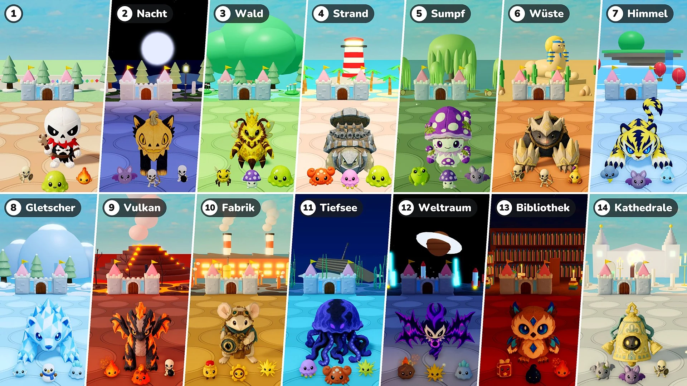

Saison 2 · Update 07 · 10. November

Burgverteidigung
- Stufen: Je 10 Runden sind jetzt eine Stufe. Stufe 1 ist das Städtchen wie bisher; ab Stufe 2 ist jede Stufe ein anderer Ort mit eigenem Licht und Wetter, eigenem Boden und eigener Deko und mit eigenen Monstern, Elite-Gegnern und Bossen. Nach dem letzten Ort beginnen die Orte wieder beim Ort von Stufe 2.
- Bosse: Ein weiterer Boss alle 10 Runden → immer nur ein Boss, und so viele Elite-Gegner kommen mit ihm herein, wie es zusätzliche Bosse gab (1 in den Runden 15 und 20, 2 in den Runden 25 und 30 …). Ab Stufe 2 sind Bosse und Elite die Plüschtiere dieses Ortes. Honigkönigin kann jetzt auch als Boss kommen.
- Elite: Elite-Gegner sind jetzt 1,15-mal so groß. Ab Stufe 2 steigen ihre LP um 50 % pro Stufe, und die Sterne, die sie fallen lassen, ändern sich von 10 auf 10 × die Stufennummer (20 in Stufe 2, 30 in Stufe 3 …).
- Neue Monster: 16 neue Monster kommen in den Orten dazu (Fledermaus · Krabbe · Qualle · Giftfrosch · Skorpion · Gewitterwolke · Frostgeist · Schneemann · Eisschleim · Lavaschleim · Aufzieh-Soldat · Zahnrad · Meteor · Zauberbuch · Tintenklecks · Wasserspeier). Die Reiter Monster und Bosse im Lexikon sind jetzt nach Stufen aufgeteilt.
- Werte-Verstärkung: In einer Runde, in der Plüschtiere zur Wahl stehen, gibt es keine Werte-Verstärkung mehr.
- Beschwörungen: Behoben: Werte-Verstärkungen wirkten nicht auf Beschwörungen. Sie wirken jetzt auf die Bienen von Honigkönigin, den Baum von Sprosspiep und den Spiegelzwilling genauso wie auf Plüschtiere, und eine Werte-Verstärkung, die du wählst, während eine Beschwörung auf dem Feld steht, wirkt sofort.
- 2-fache Geschwindigkeit: Neben der Pause-Taste gibt es jetzt eine Taste „×2“. Drückst du sie, läuft der Kampf doppelt so schnell; drückst du sie erneut, läuft er wieder normal. Die Zeit zum Wählen von Plüschtieren und Verstärkungen bleibt gleich, und dein Avatar läuft wie gewohnt. Bei „Zusammen spielen“ ändert sich der ganze Durchgang, egal wer drückt.
- Burg-LP: Die LP-Leiste der Burg ist größer, und die LP-Zahlen stehen direkt neben der Leiste.
Stufen und Orte
Die Orte ab Stufe 2 mit ihren Monstern und Bossen. Die Plüschtiere, die als Boss oder Großer Boss eines Ortes kommen, kommen dort auch als Elite.
- Stufe 2 · Nacht: Fledermaus · Skelettschütze · Skelettbomber — Boss: Blissfox · Flauschi — Großer Boss: Dreadfox · Pumpcat
- Stufe 3 · Wald: Arbeitsbiene · Giftpilz · Schleim — Boss: Zapfenigel · Honigklecks — Großer Boss: Honigkönigin — Elite: Sprosspiep
- Stufe 4 · Strand: Krabbe · Qualle · Schleim — Boss: Cocoblin · Steinschildi — Großer Boss: Rocoblin · Eisenschildi
- Stufe 5 · Sumpf: Giftfrosch · Giftpilz · Fledermaus — Boss: Mudpug · Giftschnecki — Großer Boss: Boghorn · Sporipilz
- Stufe 6 · Wüste: Skelettkrieger · Skelettschütze · Skorpion — Boss: Bonis · Knautschpfote — Großer Boss: Bonix · Stahlpfote
- Stufe 7 · Himmel: Gewitterwolke · Fledermaus · Frostgeist — Boss: Voltis · Polarmarder — Großer Boss: Voltiger · Griffion
- Stufe 8 · Gletscher: Frostgeist · Schneemann · Eisschleim — Boss: Glassy · Shardfin — Großer Boss: Polarrok · Prismlance
- Stufe 9 · Vulkan: Glut · Lavaschleim · Skelettbomber — Boss: Flamo · Ashgon — Großer Boss: Flammonyx · Embergon
- Stufe 10 · Fabrik: Aufzieh-Soldat · Zahnrad · Funke — Boss: Mouseball · Tickrad — Großer Boss: Optimouse · Obscor
- Stufe 11 · Tiefsee: Qualle · Krabbe · Funke — Boss: Hydris · Frico — Großer Boss: Serenis · Abyzel
- Stufe 12 · Weltraum: Meteor · Funke · Eisschleim — Boss: Voidren · Echowing — Großer Boss: Voidling · Noisewing
- Stufe 13 · Bibliothek: Zauberbuch · Tintenklecks · Glut — Boss: Melty · Briarowl — Großer Boss: Candric · Crystowl
- Stufe 14 · Kathedrale: Wasserspeier · Fledermaus · Skelettkrieger — Boss: Lilupi · Glöckchen — Großer Boss: Radiant · Glockenkoloss